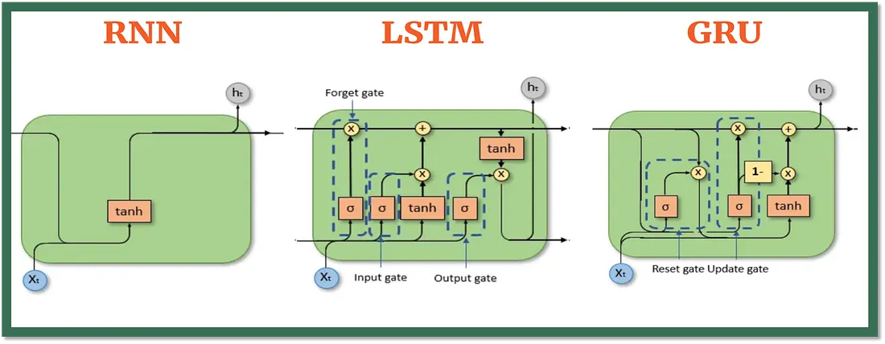

RNN의 한계점에서부터 Gated RNN의 등장까지
RNN은 순서가 있는 데이터를 처리하기 위해 이전 시점의 정보(hidden state)를 다음 시점으로 계속 넘겨줍니다.
이 과정에서 똑같은 가중치 행렬(W, W_hh)을 계속해서 곱하게 됩니다.
RNN은 BPTT(Backpropagation Through Time)라는 방식으로 학습하는데, 이 과정에서 기울기(Gradient)를 계산할 때, 똑같은 가중치 행렬 W가 시퀀스의 길이만큼 반복적으로 곱해집니다.
그 곱해지는 값이 1보다 크거나 작을 경우 문제가 발생하게 됩니다.
(Exploding Gradient)
예를 들어, 1.2를 계속 곱하면 (1.2 → 1.44 → 1.728...) 값이 기하급수적으로 커져서,
무한대(inf, ∞)로 발산합니다.
이처럼 기울기 값이 비정상적으로 커지면 가중치가 너무 크게 업데이트되어 학습이 불안정해지고 모델이 수렴하지 못하는 문제가 발생합니다.
(Vanishing Gradient)
반대로 0.8을 계속 곱하면 (0.8 → 0.64 → 0.512...) 값이 순식간에 0에 가까워집니다.
이것이 바로 장기 의존성 문제의 핵심 원인입니다.
기울기 값이 0으로 사라져 버리면, 시퀀스의 앞부분에 있는 중요한 정보가 뒤쪽까지 전달되지 못하고, 모델은 먼 과거의 정보를 학습할 수 없게 됩니다.
"RNN은 구조적으로 동일한 가중치를 계속 곱하기 때문에, 시퀀스가 길어질수록 기울기가 폭발하거나(Exploding) 사라져서(Vanishing) 제대로 된 학습이 어렵다"라는 RNN의 고질적인 문제점을 지적하고 있는 것입니다.
그리고 바로 이 문제를 해결하기 위해, 정보를 무작정 곱하는 대신 '게이트(Gate)'라는 장치를 이용해 정보의 흐름을 조절하는 LSTM과 GRU가 등장하게 됩니다.

RNN은 시계열 데이터나 자연어와 같이 순서가 중요한 데이터를 처리하는 데 특화된 신경망이지만, 장기 의존성 문제(오래전 정보가 뒤로 갈수록 희미해지는 현상)라는 한계가 있습니다. LSTM과 GRU는 바로 이 문제를 해결하기 위해 등장한 모델입니다.
LSTM은 '장기 의존성 문제'를 해결하기 위해 '셀 상태(Cell State)'라는 중요한 개념을 도입했습니다.
이 셀 상태가 효과적으로 작동하는 핵심 원리를 바로 CEC(Constant Error Carousel)라고 부릅니다.
셀 상태는 정보가 전체 시퀀스를 따라 큰 변화 없이 흐르도록 하는 일종의 컨베이어 벨트 역할을 합니다.
그리고 이 컨베이어 벨트에 정보를 추가하거나 제거하는 역할을 하는 세 개의 문(Gate)이 존재합니다.
LSTM의 핵심을 이해하기 위해서는,
먼저 '기억'을 다루는 두 가지 핵심 요소와 이 기억이 어떻게 관리되는지 알아야 합니다.
이것이 바로 LSTM의 가장 중요한 혁신입니다.
셀 상태는 정보가 전체 문장을 따라 거의 변하지 않고 쭉 흘러갈 수 있도록 하는 통로 역할을 합니다.
문장의 주어나 전체적인 맥락과 같이 정말 중요한 핵심 정보들이 여기에 기록되고 오랫동안 보존됩니다.
Cell State의 방대한 정보와 현재 들어온 정보를 바탕으로,
'지금 당장 필요한 내용만 요약'처럼 단기적으로 필요한 정보와 같습니다.
이 요약본은 두 가지 중요한 역할을 합니다.
두 종류의 기억이 있다는 것을 알았으니,
이제 더 중요한 장기 기억(셀 상태)이 어떻게 똑똑하게 관리되는지 살펴보겠습니다.
셀 상태는 단순히 게이트들의 정보를 섞는 것이 아니라,
'이전 기억을 토대로 지우고 새로 쓰는' 과정을 통해 만들어집니다.
이 과정은 두 단계로 이루어집니다.
먼저, 이전 셀 상태, Ct−1를 가져옵니다.
그리고 망각 게이트(Forget Gate)을 통해
"덜 중요한 기억(정보)"라고 판단되는 부분을 지웁니다.
그 다음, 입력 게이트(Input Gate)를 통해
"새로 들어온 정보가 중요하다"라고 판단되는 내용을 빈 공간에 새로 추가합니다.
결론적으로, 현재의 셀 상태(Ct)란 과거의 기억(Ct−1)에서 잊을 부분은 잊고(Forget),
새로운 정보를 선별하여 더한(Input) 최종 결과물인 것입니다.
이처럼 필요한 정보는 남기고 불필요한 정보는 버리는 '선택적 업데이트' 과정이
바로 LSTM이 장기적인 맥락을 기억할 수 있는 핵심 비결입니다.
그렇다면, 이 '지우고 더하는' 방식이 어떻게 RNN의 근본적인 문제였던 기울기 소실을 해결할 수 있었을까요?
셀 상태가 통로의 역할을 하면서 기울기 소실 문제를 해결할 수 있는 근본적인 이유,
바로 Constant Error Carousel (CEC)라는 메커니즘 덕분입니다.
앞서 RNN이 가중치를 계속 '곱해서' 기울기 소실 문제가 생긴다고 했죠?
CEC는 이 문제를 정면으로 해결합니다.
핵심은 셀 상태가 업데이트될 때 '곱셈'이 아닌 '덧셈'을 기본 연산으로 사용한다는 점입니다.
C_t = (Forget_Gate * C_{t-1}) + (Input_Gate * New_Info)
이 덧셈 구조 덕분에, 역전파 시 기울기(오차)가 곱셈으로 인해 급격히 작아지는 현상을 막고
먼 과거까지 거의 그대로(Constant) 전달될 수 있습니다.
'Carousel'은 정보가 회전목마처럼 사라지지 않고 계속 순환하며 흐를 수 있다는 것을 비유합니다.
이것이 LSTM이 장기 의존성을 학습할 수 있는 비결입니다.
이제 이 모든 과정을 관장하는 문지기, 즉 게이트들에 대해 자세히 알아보겠습니다.
과거의 어떤 정보를 잊어버릴지 결정합니다.
시그모이드 함수를 통해
0(모두 잊기)과 1(모두 기억) 사이의 값을 출력하여
이전 셀 상태에서 버릴 정보를 정합니다.
현재 입력된 정보 중 어떤 것을 셀 상태에 저장할지 결정합니다.
시그모이드 함수로 어떤 값을 업데이트할지 정하고, tanh 함수로 새로운 후보 값 벡터를 만들어 셀 상태에 더할 정보를 생성합니다.
셀 상태를 바탕으로 어떤 값을 출력할지 결정합니다.
시그모이드 함수로 셀 상태의 어느 부분을 출력할지 정하고, 셀 상태를 tanh 함수에 통과시킨 값과 곱하여 최종 출력을 만듭니다.
GRU는 LSTM의 복잡한 구조를 더 간단하게 만든, 효율적인 대안입니다.
GRU는 LSTM의 복잡한 구조를 더 간단하게 만든 모델입니다.
LSTM의 핵심 아이디어인 '게이트'는 유지하되, 셀 상태와 은닉 상태를 하나로 통합하고,
게이트도 세 개에서 두 개로 줄였습니다.
구조가 단순해진 만큼 계산 효율성이 높고, 때로는 LSTM과 비슷한 성능을 보이기도 합니다.
GRU의 핵심은 '통합된 기억'과 이를 관리하는 '두 개의 게이트'입니다.
GRU에는 LSTM처럼 분리된 Cell State는 없습니다.
대신 Hidden State 하나가 장기 기억과 단기 기억의 역할을 모두 수행합니다.
과거의 정보와 현재 정보를 어떻게 조합할지 결정합니다.
이 게이트가 닫히면(0에 가까운 값), 과거의 정보를 무시하고 현재 정보에 더 집중하게 됩니다.
문장의 주제가 완전히 바뀌는 지점에서, 리셋 게이트는 이전 주제와 관련된 과거 정보를 초기화하는 역할을 합니다.
과거 정보를 얼마나 유지하고, 현재 정보를 얼마나 새로 추가할지 결정합니다.
LSTM의 망각 게이트와 입력 게이트를 합쳐놓은 것과 유사한 역할을 합니다.
업데이트 게이트는 이전 문맥을 얼마나 기억할지와 새로운 정보를 얼마나 반영할지 그 비율을 조절합니다.
| 구분 | LSTM (Long Short-Term Memory) | GRU (Gated Recurrent Unit) |
|---|---|---|
| 아이디어 | 정보의 통로 역할을 하는 Cell State를 도입하여 장기 기억을 효과적으로 보존 | LSTM의 복잡한 구조를 단순화하여 Hidden State가 모든 역할을 수행 |
| State | Cell state(장기 기억) + Hidden state(단기 기억) 구조 | Hidden State 하나로 통합된 구조 |
| 게이트 종류 |
|
|
| 구조 복잡성 |
더 복잡하고 파라미터 수가 많음 | 더 단순하고 파라미터 수가 적음 |
| 계산 효율성 |
상대적으로 계산량이 많고 느림 | 상대적으로 계산량이 적고 빠름 |
어떤 시퀀스 모델이 더 좋은지에 대해 명확하게 밝혀진 것은 없습니다.
다만, LSTM과 GRU 모두 Vanilla RNN보다는 확실한 성능을 보장합니다.